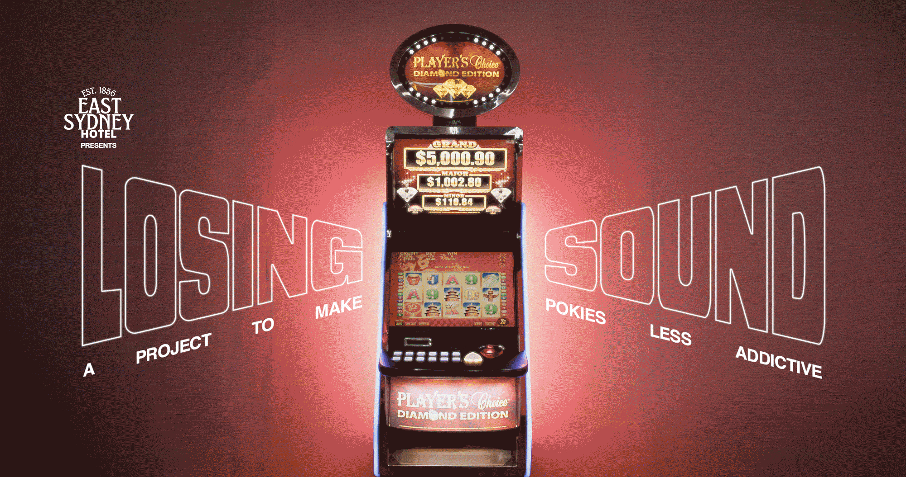

<!DOCTYPE html>
<html lang="en">
<head>
    <meta charset="UTF-8">
    <meta name="viewport" content="width=device-width, initial-scale=1.0">
    <title>Losing Sound - A Project To Make Pokies Less Addictive</title>
    <style>
        /* Modern Reset & Base Styles */
        * {
            box-sizing: border-box;
        }

        body {
            font-family: 'Gotham', 'Helvetica Neue', Helvetica, Arial, sans-serif;
            margin: 0;
            background-color: black;
            color: white;
            line-height: 1.4;
            -webkit-font-smoothing: antialiased;
        }

        /* Layout Containers */
        .container {
            width: 100%;
            max-width: 1080px; /* Maintains original desktop width */
            margin: 0 auto;
            padding: 0 20px; /* Padding for mobile gutters */
        }

        /* Responsive Images */
        img {
            max-width: 100%;
            height: auto;
            display: block;
        }

        /* Typography */
        h1, h2 {
            font-size: 2.5em; /* Original Desktop Size */
            line-height: 1.1;
            color: white;
            margin-top: 0;
			            font-weight: normal;

          /*   text-transform: uppercase;  */
        }

        a {
            color: white;
            text-decoration: underline;
            text-decoration-color: white;
            text-decoration-thickness: 2px;
            text-underline-offset: 4px;
            transition: color 0.3s, text-decoration-color 0.3s;
        }

        a:hover {
            text-decoration-color: red;
            color: red;
        }

        .custom-underline {
            text-decoration: underline;
            text-decoration-thickness: 4px;
            text-underline-offset: 8px;
        }

        /* Header Banner */
        .banner-container {
            width: 100%;
            line-height: 0;
            background-color: black;
        }

        .banner-image {
            width: 100%;
            height: auto;
        }

        /* Video Section */
        .video-section {
            padding: 60px 0;
			            font-weight: normal;

        }

        .video-container {
            position: relative;
            padding-bottom: 56.25%; /* 16:9 Aspect Ratio */
            height: 0;
            overflow: hidden;
            margin-bottom: 30px;
        }

        .video-container iframe {
            position: absolute;
            top: 0;
            left: 0;
            width: 100%;
            height: 100%;
			            font-weight: normal;

        }

        /* SFX Grid Section */
        .sfx-section {
            padding: 40px 0;
			            font-weight: normal;

        }

        .sfx-grid {
            display: grid;
            /* Desktop: 5 columns */
            grid-template-columns: repeat(6, 1fr);
            gap: 20px;
            max-width: 1080px;
            margin: 0 auto;
        }

        .sfx-icon {
            aspect-ratio: 1 / 1;
            cursor: pointer;
            background-size: cover;
            background-position: center;
            background-repeat: no-repeat;
           /*  transition: transform 0.2s;  */
        }

        .sfx-icon:hover {
           /*  transform: scale(1.05);  */
        }

        /* Thumbnail Photo Section */
        .photo-section {
            padding: 40px 0;
        }

        .thumbnails-grid {
            display: grid;
            /* Desktop: 3 columns */
            grid-template-columns: repeat(3, 1fr);
            gap: 20px;
        }

        .thumbnail {
            width: 100%;
            cursor: pointer;
            transition: opacity 0.3s;
        }

        .thumbnail:hover {
            opacity: 0.8;
        }

        /* History Section */
        .history-section {
            background-image: linear-gradient(rgba(0,0,0,0.6), rgba(0,0,0,0.6)), url('media/east-sydney-hotel-losing-sound.jpg');
            background-size: cover;
            background-position: center;
            padding: 80px 0;
        }

        .history-section h2 {
            text-transform: none;
            line-height: 1.3;
            font-weight: normal;
        }

        /* Credits */
        .credits-section {
            padding: 60px 0;
            font-size: 0.9em;
        }

        .credits-section p {
            margin-bottom: 15px;
            line-height: 1.5;
        }

        /* Overlay */
        .large-image-overlay {
            display: none;
            position: fixed;
            top: 0;
            left: 0;
            width: 100%;
            height: 100%;
            background-color: rgba(0, 0, 0, 0.95);
            justify-content: center;
            align-items: center;
            z-index: 2000;
        }

        .large-image-container {
            position: relative;
            max-width: 90%;
            max-height: 90%;
        }

        .close-button {
            position: absolute;
            top: -40px;
            right: 0;
            color: white;
            font-size: 30px;
            cursor: pointer;
        }

        /* TABLET STYLES (Under 1024px) */
        @media (max-width: 1024px) {
            h2 {
                font-size: 2em;
            }
            .sfx-grid {
                grid-template-columns: repeat(3, 1fr);
            }
        }

        /* MOBILE STYLES (Under 768px) */
        @media (max-width: 768px) {
            h2 {
                font-size: 1.5em; /* Smaller appropriate font */
            }

            .container {
                padding: 0 15px;
            }

            .video-section, .photo-section, .credits-section {
                padding: 30px 0;
            }

            .sfx-grid {
                /* Full width icons on mobile, 2 wide */
                grid-template-columns: repeat(3, 1fr);
                gap: 10px;
            }

            .thumbnails-grid {
                /* Change to 2 wide for thumbnails as requested */
                grid-template-columns: repeat(2, 1fr);
                gap: 10px;
            }

            .history-section {
                padding: 40px 0;
            }
            
            .history-section h2 {
                font-size: 1.2em;
            }

            .credits-section {
                text-align: left;
            }
        }
    </style>
</head>
<body>
	
    <div class="banner-container">
        
    </div>	

    <div class="video-section">
        <div class="container"><br><br>
            <h2  style="text-align: center;">Did you know poker machines don't have losing sounds? Even players don't know.</h2>
            <br><br><br>
            
            <br><br><br><br>
            <h2  style="text-align: center;">So we modified a poker machine and tested losing sounds on real gamers. Have a look.</h2>
            <br><br><br>
            <div class="video-container">
                <iframe src="https://player.vimeo.com/video/1121833683" frameborder="0" allow="autoplay; fullscreen" allowfullscreen></iframe>
            </div><br><br>
            <h2  style="text-align: center;">It really works to reduce harm.</h2>
            <br><br><br>
            
            
            
		
        </div>
			 
    </div>
<h2 style="text-align: center; margin: 40px 0; font-weight: bold; text-transform: uppercase;"><a href="https://www.change.org/losingsound">SIGN PETITION NOW</a></h2>
    <div class="sfx-section">
        <div class="container">
			<h2  style="text-align: center;">
            These losing sounds were created to psychologically reduce gambling harm.
				</h2><br><br>
            <div class="sfx-grid">
                <div class="sfx-icon" data-sound="media/sfx1.wav" style="background-image: url('media/losing-sound-button-1-off.jpg')"></div>
                <div class="sfx-icon" data-sound="media/sfx2.wav" style="background-image: url('media/losing-sound-button-2-off.jpg')"></div>
                <div class="sfx-icon" data-sound="media/sfx3.wav" style="background-image: url('media/losing-sound-button-3-off.jpg')"></div>
                <div class="sfx-icon" data-sound="media/sfx4.wav" style="background-image: url('media/losing-sound-button-4-off.jpg')"></div>
                <div class="sfx-icon" data-sound="media/sfx5.wav" style="background-image: url('media/losing-sound-button-5-off.jpg')"></div>
                <div class="sfx-icon" data-sound="media/sfx6.wav" style="background-image: url('media/losing-sound-button-6-off.jpg')"></div>
            </div>
            <br><br><br>
            <div style="text-align: center;">
                <h2 ><a href="media/losing-sounds.zip" style="font-weight: bold; text-transform: uppercase;">Download sound files</a>
				<br><br>
                <p style="text-align: center;">They are free for anyone to use, <br>
especially gaming companies.</p>
					</h2>
            </div>
        </div>
    </div>

    <div class="photo-section">
        <div class="container">
            <div class="thumbnails-grid">
                
                
                
                
                
                
                
                
                
                
                
                
            </div>
        </div>
    </div>

    <div class="history-section">
        <div class="container">
            <h2>Why did we do this?<br><br>
            A close relative of ours lost 150k on the pokies. In the space of one year they slapped away the credit cards, the children’s bank accounts, the entire house deposit, and broke their family apart. This is one of thousands of stories all aided by highly addictive poker machines in pubs. While the East Sydney Hotel has always been proudly pokie-free, we still want to minimise the harm pokies can do on individuals.</h2>
        </div>
    </div>

    <div class="credits-section">
        <div class="container">
           

        <p><strong>Project by:</strong> Neil Walshe<br>
              
              <strong>Losing SFX by:</strong> Jeremy Richmond<br>
              <strong>Directed by:</strong> Milos Mlynarik<br>
              <strong>In partnership with:</strong> Rumble, Milos, Sure Studios, Optika, East Sydney Hotel<br>

<strong>Cast:</strong> Trevor Jones, Mayra Nascimento, Paul Presdee, Roslyn Lynch, Paul Amaral, Dr Anastasia Hronis, Jeremy Richmond<br>
<strong>Assistant Director:</strong> Kota Sato  <br>
<strong>Voice Over:</strong> Daniel William  <br>
<strong>Stylist:</strong> Emma Cotterill  <br>
<strong>Gaffer:</strong> Steve Schofield, Alan Fraser  <br>
<strong>Sound:</strong> Dexter Cave<br>
<strong>Data Wrangler:</strong> Woodsee  <br>
<strong>Editor:</strong> James Tyrrell  <br>
<strong>Score:</strong> Jeremy Richmond  <br>
<strong>Effects:</strong> John Agapitos<br>
<strong>Thanks to:</strong> Alex Booker, Antony Aston, Ant Melder, Benn Sutton, Ben Rae, Felix Bornholdt, Justin Solomons, Kelly Walshe, Kiara Watson,Mariah Ferrer,Michael Harris, Nick Polovineo, Nils Eberhardt, Parisa Rezaei-Abyaneh, Peter Kanellopoulos, Rino Darusman,Ryan Greves, Tommy Cehak<br>
  <br>

      <strong>Media Contact:</strong> Neil Walshe 0403 852 056 neiljwalshe@googlemail.com</p>
        </div>
    </div>

    <div class="large-image-overlay" id="overlay">
        <div class="large-image-container">
            <span class="close-button" id="closeBtn">&times;</span>
            
        </div>
    </div>

    <script>
        const sfxIcons = document.querySelectorAll('.sfx-icon');
        const overlay = document.getElementById('overlay');
        const largeImg = document.getElementById('largeImg');
        const closeBtn = document.getElementById('closeBtn');
        const thumbnails = document.querySelectorAll('.thumbnail');
        let playingSound = null;

        // Sound Engine
        function handleSfx(e) {
            const soundFile = e.target.dataset.sound;
            if (playingSound) {
                playingSound.pause();
                playingSound.currentTime = 0;
            }
            playingSound = new Audio(soundFile);
            playingSound.play();

            // Visual toggle for hover (Desktop only)
            if (window.innerWidth > 768) {
                const bg = e.target.style.backgroundImage;
                if (bg.includes('-off')) {
                    e.target.style.backgroundImage = bg.replace('-off', '-over');
                    e.target.addEventListener('mouseleave', () => {
                        e.target.style.backgroundImage = bg;
                    }, { once: true });
                }
            }
        }

        sfxIcons.forEach(icon => {
            icon.addEventListener('mouseenter', handleSfx);
            icon.addEventListener('click', handleSfx); // Support touch
        });

        // Gallery Engine
        thumbnails.forEach(t => {
            t.addEventListener('click', () => {
                largeImg.src = t.dataset.large;
                overlay.style.display = 'flex';
            });
        });

        closeBtn.addEventListener('click', () => overlay.style.display = 'none');
        overlay.addEventListener('click', (e) => { if(e.target === overlay) overlay.style.display = 'none'; });
    </script>
</body>
</html>